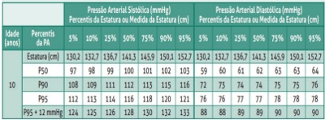
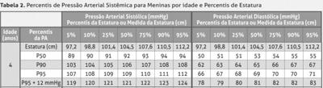
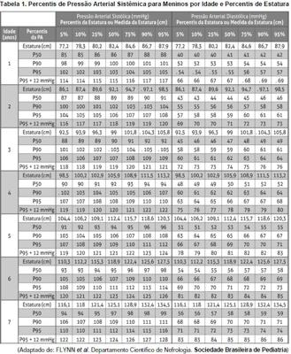
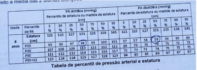
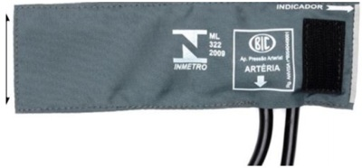
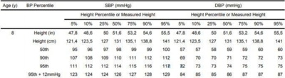
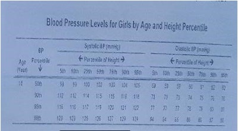
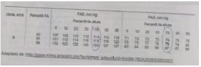
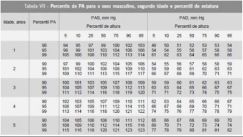

Questão 1 · Hipertensão arterial HAS em crianças e adolescentes · Pediatria · Diagnóstico Nutricional · 4000184070Em consulta médica de rotina, um menino previamente hígido, de 10 anos e 6 meses de idade, apresenta peso de 40 kg e estatura de 1,30 m. Foram realizadas três medidas da pressão arterial sob condições adequadas, obtendo-se o valor médio de 100x70 mmHg em todas as aferições. De acordo com as Curvas de Referência da OMS para IMC e altura por idade e sexo, e segundo a 7ª Diretriz Brasileira de Hipertensão Arterial (tabelas acima), este paciente apresenta:


A sobrepeso, estatura normal e pressão arterial elevada.
B obesidade, baixa estatura e pressão arterial elevada.
C obesidade, estatura normal e pressão arterial normal.
D sobrepeso, risco de baixa estatura e pressão arterial normal.
Questão 2 · Diagnóstico · 4000169852Um menino de 4 anos idade, em consulta de rotina de puericultura, sem intercorrências patológicas pregressas até o momento, tem sua pressão arterial aferida com comprimento da bolsa de ar do manguito encobrindo exatamente a circunferência do seu braço. A pressão arterial encontrada foi: 106x68 mmHg. Os percentis de pressão para sua idade, sexo e altura são: P50: 92x50 mmHg; P90: 105x62 mmHg; P95: 108x66 mmHg; P95+12 mmHg: 120x78 mmHg. Em relação a essa situação clínica, assinale a afirmativa correta.
A A pressão arterial encontra-se acima do percentil 90 para idade, sexo e altura, sendo necessário confirmar o valor encontrado com mais 2 medidas ainda durante essa consulta, para definição de conduta a partir da média dos valores encontrados.
B A pressão arterial encontra-se acima do percentil 90 para idade, sexo e altura. Dessa forma, tem-se o diagnóstico de pressão elevada para idade e deve-se iniciar investigação complementar para afastar causa secundária, considerando a sua faixa etária.
C Apesar da pressão arterial aferida estar acima do percentil 90 para idade, sexo e altura do paciente, o manguito utilizado está pequeno e inadequado para ele, pois a bolsa de ar deveria encobrir até 80% da circunferência do seu braço, podendo aumentar falsamente os valores de pressão encontrados.
D Todo paciente acima de 2 anos de idade, independente de fator de risco para hipertensão arterial, deve ter sua pressão arterial aferida em toda consulta de puericultura.
Questão 3 · Def inição e classif icação · Pediatria · 4000169057Em consulta de rotina, uma paciente de 9 anos de idade, sexo feminino, sem queixas, apresentou peso de 30 kg, altura de 1,30 m e pressão arterial (PA) de 110 × 70 mmHg, aferida adequadamente e confirmada mais duas vezes. (Sociedade Brasileira de Pediatria. Com base na tabela acima, a classificação da pressão arterial desta paciente é

A pressão arterial baixa.
B pressão arterial normal.
C hipertensão estágio I.
D hipertensão estágio II.
E pressão arterial elevada.
Questão 4 · Hipertensão arterial HAS em crianças e adolescentes · Pediatria · 4000166595Uma criança de três anos de idade, 17 kg de peso, 102cm de estatura, é levada em uma consulta de puericultura na Unidade Básica de Saúde. Ao aferir a pressão arterial desse paciente pela primeira vez, o pediatra encontra o valor de 120/70 mmHg. A frequência cardíaca era de 104 bpm e a respiratória de 28 irpm, sem nenhuma queixa ou comorbidade ou história pregressa relevante. Sobre esse quadro clínico, assinale a alternativa correta.
A Faz parte da propedêutica do quadro de hipertensão a realização de ecogardiograma de urgência, e o paciente deve ser encaminhado ao especialista.
B Deve-se orientar a mãe quanto ao caráter benigno do quadro, por se tratar de uma pressão arterial normal, menor que o percentil 90.
C O início de anti-hipertensivo deve ser iniciado empiricamente e imediatamente, tendo em vista o efeito deletério dessa hipertensão crônica.
D O uso de um manguito inadequado e com o paciente chorando podem justificar essa pressão arterial e o paciente não ser hipertenso.
Questão 5 · Pediatria · Tratamento · 4000166297Menino, 8 anos de idade, com diagnóstico de obesidade e antecedente de hipodisplasia renal bilateral, apresenta clearance de creatinina de 85 ml/min/1,73 m² (estável nas últimas 3 consultas) e microalbuminúria de 24 horas de 550 mg. Nas últimas 3 consultas, vem mantendo níveis tensionais acima do percentil 95 + 12 mmHg. Realizou fundo de olho e ecocardiograma, sem alterações. Qual seria a classe de anti-hipertensivos mais indicada para esse paciente?
A Betabloqueador.
B Bloqueador de canal de cálcio.
C Diurético tiazídico.
D Inibidor da enzima conversora de angiotensina.
Questão 6 · Pediatria · Diagnóstico · 4000164312Menino de 5 anos é trazido à consulta de puericultura sem queixas. Peso: 19 kg (P50), altura: 109 cm, PA: 106 x 64 mmHg (repetida e confirmada), restante do exame físico sem alterações. Consultando a tabela abaixo, como se classifica a pressão aferida nesta consulta?

A Pressão arterial elevada.
B Hipertensão estágio 2.
C Hipertensão estágio 1.
D Pressão arterial normal.
Questão 7 · Hipertensão arterial HAS em crianças e adolescentes · Pediatria · 4000146968Escolar de nove anos, do sexo feminino, obesa, tem a pressão arterial aferida no percentil 95%. Após duas repetições da medida, em consultas sucessivas, a PA mantém-se no percentil 95%. Além do controle do peso com tratamento da obesidade, a conduta adequada para o caso é:
A Monitorar PA; se persistir elevada, iniciar tratamento para hipertensão arterial.
B Considerar que a pressão é limítrofe normal para idade e manter rotina pediátrica.
C Realizar avaliação diagnóstica e tratamento não farmacológico para Hipertensão arterial.
D Monitorar PA; se persistir elevada, realizar avaliação diagnóstica e considerar tratamento para hipertensão arterial.
E Realizar avaliação diagnóstica e iniciar tratamento farmacológico para hipertensão arterial.
Questão 8 · Hipertensão arterial HAS em crianças e adolescentes · Pediatria · 4000146836A hipertensão arterial sistêmica é problema de saúde pública mundial e tem sua prevalência crescente entre crianças e adolescentes, principalmente devido ao aumento do sobrepeso e obesidade nessa faixa etária. A respeito dessa condição clínica, assinale a alternativa CORRETA.
A Todas as crianças saudáveis maiores de 3 anos devem ter sua pressão arterial aferida pelo menos uma vez a cada dois anos.
B As tabelas de pressão arterial em crianças utilizam as seguintes variáveis: sexo, idade, peso e estatura.
C São dados sugestivos de hipertensão arterial primária ou essencial: sobrepeso ou obesidade, história familiar positiva para HAS e maior elevação da PA diastólica.
D Mudanças no estilo de vida, por meio de dieta e atividade física, têm indicação restrita no controle da hipertensão arterial em crianças.
E Algumas indicações de tratamento medicamentoso são: hipertensão sintomática e HAS em paciente com doença renal crônica e/ou diabetes mellitus tipo 1 ou 2.
Questão 9 · Hipertensão arterial HAS em crianças e adolescentes · Pediatria · 4000146487A monitorização periódica da pressão arterial em Pediatria é medida rotineira nas crianças acima dos 3 anos de idade. Para uma correta aferição da pressão arterial em crianças, deve-se considerar a largura (menor medida) e o comprimento (maior medida) da câmara de ar (manguito). A largura deve corresponder a
A dois terços do perímetro do braço medido no ponto médio entre o acrômio e o olécrano.
B 40% da circunferência do braço medida no ponto médio entre o acrômio e o olécrano.
C 40% do comprimento do braço entre o acrômio e o olécrano.
D 50% do comprimento do braço entre o acrômio e o olécrano.
E 80% do perímetro do braço, medido no ponto médio entre o acrômio e o olécrano.
Questão 10 · Hipertensão arterial HAS em crianças e adolescentes · Pediatria · 4000146364Criança de 7 anos, com sobrepeso, comparece à consulta de puericultura. Seguindo as recomendações internacionais, o pediatra aferiu a pressão arterial (PA). A criança estava calma, tranquila, sentada com as costas e os pés apoiados no chão, com o braço direito apoiado e estendido na altura do coração. Foi utilizado um manguito cobrindo 40% da largura e 80% do comprimento da circunferência medida no ponto médio do braço e um aparelho oscilométrico. A medida de PA revelou pressão de 112 x 74 mmHg (ambas no percentil entre 95 e 95 + 12 mmHg para a sua idade, sexo e altura). A conduta adequada é
A repetir a aferição 2 vezes, utilizando aparelho auscultatório, para confirmar os achados.
B repetir a aferição com manguito adequado, cobrindo 2/3 da altura do braço.
C solicitar monitorização ambulatorial de pressão arterial (MAPA para confirmar o diagnóstico de hipertensão arterial.
D orientar medidas não farmacológicas e solicitar retorno precoce para repetir a aferição, uma vez que apresentou pressão arterial elevada.
E prescrever bloqueador de canal de cálcio e encaminhar para completar a investigação diagnóstica com o nefrologista infantil.
Questão 11 · Hipertensão arterial HAS em crianças e adolescentes · Pediatria · 4000142554Menina de 4 anos de idade é vista em consulta de puericultura. A pressão arterial é medida três vezes e a média das aferições é 108x65 mmHg. Altura 101 cm e IMC +3.5 desvios padrão para idade e sexo. Sobre a pressão arterial aferida nesse atendimento podemos afirmar que está

A dentro da normalidade.
B na faixa de pressão arterial elevada para a idade.
C na faixa de hipertensão arterial estágio 1.
D na faixa de hipertensão arterial estágio 2.
E na faixa de hipertensão arterial estágio 3.
Questão 12 · Hipertensão arterial HAS em crianças e adolescentes · Pediatria · 4000142033A hipertensão arterial secundária em uma criança de 3 anos tem como principal causa:
A Alterações vasculares
B Doenças cardiológicas
C Endocrinopatias
D Anormalidades renais
Questão 13 · Medição da pressão arterial · Pediatria · 4000140782O interesse no estudo da Hipertensão Arterial Sistêmica (HAS) nas crianças e adolescentes é antigo, porém, ainda hoje, há falta de inclusão da medida da pressão arterial como rotina no exame físico da criança. As Diretrizes Brasileiras de Hipertensão davam pouca importância à HAS pediátrica, até que, na sétima e última diretriz, em 2017, houve um Capítulo dedicado exclusivamente à faixa etária pediátrica. Nesse contexto, marque V para as a rmativas verdadeiras e F para as falsas, quanto à técnica de aferição de pressão arterial na infância. ( ) É obrigatória, em toda consulta médica, a medida da pressão arterial, em todas as crianças com idade igual ou maior que três anos. ( ) O manguito selecionado para determinada criança deve ter largura correspondente a 40% da circunferência do braço e comprimento equivalente a 80 a 100% da mesma. ( ) A criança precisa estar tranquila por 2 a 3 minutos e para crianças maiores de dois anos utiliza-se obrigatoriamente a posição sentada com a fossa cubital ao nível do coração. ( ) São métodos para avaliação da pressão arterial: medida casual no consultório, monitorização residencial de pressão arterial e monitorização ambulatorial de pressão arterial 24 horas. Assinale a sequência correta.
A V, V, F, F
B F, V, V, V
C V, F, V, F
D F, V, F, V
Questão 14 · Investigação HAS primáriax secundária · Pediatria · 4000140706Menina, 3 anos de idade e 92 cm de estatura, está realizando a primeira medida de pressão arterial da vida. Ela não apresenta obesidade ou qualquer outra comorbidade. O pai é hipertenso, com diagnóstico realizado aos 20 anos de idade. O valor da pressão arterial no membro superior direito foi de 114 x 78 mmHg (média de 3 medidas pelo método auscultatório). No braço esquerdo, o valor foi de 116 x 80 mmHg e, na coxa esquerda, foi de 94 x 58 mmHg. As referências de pressão arterial para a idade estão apresentadas na tabela a seguir. A conduta indicada na consulta de hoje é realizar:

A Nova medida de pressão arterial em 4 a 6 semanas.
B Estudo angiográfico da aorta torácica e abdominal.
C Dosagem de cortisol, renina e ácido vanil-mandélico.
D Ultrassonografia com Doppler de rins e vias urinárias.
Questão 15 · Hipertensão arterial HAS em crianças e adolescentes · Def inição e classif icação · Pediatria · 4000140464Fernando, 6 anos de idade, foi levado à Unidade Básica de Saúde para avaliação do crescimento e desenvolvimento. Ao exame, apresentou peso de 25 kg, altura de 1,18 m e pressão arterial no membro superior direito de 120 × 70 mmHg, medida em condições adequadas e confirmada em outras duas ocasiões. Utilizando como referência a Tabela 1, adaptada de Flynn e colaboradores, a classificação da pressão arterial desse paciente é:

A pressão normal.
B hipertensão estágio I.
C pressão baixa.
D pressão elevada.
E hipertensão estágio II.
Questão 16 · Hipertensão arterial HAS em crianças e adolescentes · Pediatria · 4000129778Pré-escolar, 3 anos e 4 meses, sexo feminino, apresenta valores de Pressão Arterial aferidos em três consultas distintas: 105×65 mmHg, 106×64 mmHg e 107×63 mmHg. Valores de referência: Pressão Arterial Sistólica – Percentil 50: 90 mmHg; Percentil 90: 104 mmHg; Percentil 95: 108 mmHg; Pressão Arterial Diastólica - Percentil 50: 50 mmHg; Percentil 90: 62 mmHg; Percentil 95: 66 mmHg. Com base nesse caso, assinale a alternativa que apresenta a classificação de Pressão Arterial.
A Normotenso
B Hipertensão estágio 1
C Hipertensão estágio 2
D Hipertensão estágio 3
E Pressão arterial elevada
Questão 17 · Def inição e classif icação · 4000119255Você realizou as medidas de pressão arterial (PA) pelo método auscultatório em uma criança eutró ca, com 6 anos de idade e os valores observados estavam acima do P95. Qual sua hipótese diagnóstica?
A Hipertensão arterial estágio 1.
B Hipertensão arterial estágio 2.
C Pre hipertensão.
D Pressão arterial elevada.
Revisar: possível letra faltando em enunciado
Questão 18 · Def inição e classif icação · 4000112228Menino, 8 anos, comparece ao consultório do seu pediatra para uma avaliação de rotina. Última consulta médica há 2 anos atrás. Mãe refere que a criança está bem, não teve nenhum problema nesse período. Pediatra observa nas suas anotações que a criança nasceu a termo, não teve intercorrências neonatais e o desenvolvimento neuropsicomotor foi adequado. Nos antecedentes mórbidos, apenas algumas viroses de vias aéreas superiores e um tratamento com antibiótico devido quadro de amidalite aguda. Exame físico: peso no percentil 50 para idade e sexo, estatura 130 cm, PA 112 x 72 mmHg. Observação: a medida de PA foi feita no braço direito por método auscultatório, em condições adequadas. Foram feitas 3 medidas com intervalo de 3 minutos. Desprezada a primeira medida e feito a média das 2 últimas aferições. Utilizando a tabela acima, como é classificada a medida desse PA?

A Hipertensão arterial estágio II.
B Pressão arterial elevada.
C Hipertensão arterial estágio I.
D Dentro da normalidade.
Questão 19 · Tratamento · 4000108198Adolescente de 14 anos, com sobrepeso, apresentou pressão arterial de 130 x 85 mmHg, confirmada em 3 ocasiões diferentes. Tem antecedente familiar de hipertensão arterial. Além das orientações para perder peso, nesse momento, está indicado
A receitar amlodipina.
B iniciar captopril.
C prescrever hidroclortiazida.
D orientar restrição de sal na dieta.
E solicitar eletrocardiograma.
Questão 20 · Medição da pressão arterial · 4000107396Menina com 2 anos e 6 meses de idade, nasceu com IG: 31 semanas, peso 1450g; apresentou boa evolução e recuperação pôndero-estatural; atualmente IMC: P 75. Antecedentes familiares: a mãe da criança tem hipertensão arterial e é obesa. O pai da criança é obeso e a avó paterna teve infarto do miocárdio aos 66 anos de idade. Qual das alternativas abaixo contêm a justificativa para aferição da pressão arterial desta criança nesta consulta?
A Prematuridade/Peso nascimento.
B IMC P 75 (sobrepeso.
C Hipertensão arterial materna.
D Doença cardiovascular na avó.
Questão 21 · Dislipidemias · Hipertensão arterial HAS em crianças e adolescentes · Diagnóstico Nutricional · 4000104711Adolescente, masculino, 12 anos e 6 meses, negro, vem à consulta para avaliação dos resultados de exames. Exame físico: altura = 160cm, índice de massa corpórea (IMC) = 26 kg/m2 (escore Z +2,3), pressão arterial (PA) = 122 x 77 mmHg (entre p90 e 95, valores idênticos obtidos em duas outras ocasiões), circunferência abdominal (CA) = 88cm (> p90), Tanner = G3P3. Sem alterações no restante do exame físico. Exames laboratoriais: colesterol total = 200 mg/dL (desejável < 150 e aumentado ≥ 170 mg/dL), HDL = 30 mg/dL (deseja mg/dL), triglicérides = 210 mg/dL (desejável < 100 e aumentado ≥ 130 mg/dL), glicemia de jejum = 91 mg/dL (desejável < 100 mg/dL), insulina basal = 24 4). Quais os diagnósticos deste paciente?
A Sobrepeso, pressão arterial elevada, hipertrigliceridemia.
B Obesidade, hipertensão estágio 1, dislipidemia mista.
C Obesidade, pressão arterial elevada, síndrome metabólica.
D Sobrepeso, hipertensão estágio 1, resistência insulínica
Questão 22 · Def inição e classif icação · 4000103782Escolar, sexo masculino, 9 anos de idade, com escore z de IMC/idade de 2,3, tem sua pressão arterial aferida em uma consulta de rotina pediátrica. Os valores de pressão sistólica e diastólica estão entre o percentil 90 e 95, utilizando-se as tabelas atuais recomendadas para a classificação da pressão arterial em Pediatria. Como se classificam, atualmente, esses valores da pressão arterial?
A normotensão.
B pressão arterial elevada.
C hipertensão arterial estágio 1.
D hipertensão arterial estágio 2.
Questão 23 · Como medir · 4000099972Menina, 8 anos de idade, sem comorbidades, está em consulta de puericultura. Com o objetivo de escolher o manguito adequado para medir a pressão arterial, foi medida a distância entre o acrômio e o olécrano no braço direito, obtendo-se o valor de 28 cm. No ponto médio desta distância (a 14 cm do acrômio), foi medida a circunferência do braço, obtendo-se o valor de 20 cm. Qual é a largura ideal da parte inflável do manguito para esta criança, conforme representado pela figura?

A 8 cm.
B 10 cm.
C 12 cm.
D 14 cm.
E 16 cm.
Questão 24 · Hipertensão arterial HAS em crianças e adolescentes · Pediatria · 4000095939Em um primeiro atendimento em que foi realizada a aferição da pressão arterial (Ppelo método auscultatório de uma criança com 5 anos de idade, sem antecedentes patológicos anteriores ou atuais, as medidas apresentavam níveis entre o P90 e P95. Qual a hipótese e conduta nesse caso?
A Pressão arterial elevada, orientações sobre estilo de vida, retorno em 6 meses.
B Pré hipertensão, orientações sobre estilo de vida, retorno em 3 meses.
C Pressão arterial elevada, orientações sobre estilo de vida, repetir as medidas da PA em outro horário do dia.
D Pré hipertensão, orientações sobre estilo de vida, repetir as medidas da PA em outro horário do dia.
Questão 25 · Tratamento · 4000079531Você esta de plantão no pronto-socorro e recebe uma criança em emergência hipertensiva. Qual a droga de escolha para tratamento desse quadro?
A Nifedipina
B Enalapril
C Hidralazina
D Nitroprussiato de sódio
Questão 26 · Coarctação de aorta · Hipertensão arterial HAS em crianças e adolescentes · 4000074239Menina, seis anos de idade, acompanhada por quadro de hipertensão arterial, apresenta episódios de epistaxe, cefaléia e claudicação intermitente. O exame físico mostrou pulsos femorais de amplitude diminuída com gradiente tensional entre os membros superiores e inferiores. O diagnóstico clínico mais provável é:
A Anomalia de Ebstein.
B Coarctação de aorta.
C Comunicação interventricular.
D Estenose aórtica.
Questão 27 · Medição da pressão arterial · Cardiologia · 4000073168Em relação a hipertensão arterial sistêmica (HAS) em crianças e adolescentes, assinale a assertiva correta:
A Hipertensão grave e sintomática em crianças geralmente é de origem secundária, devendo ser investigada uma causa básica.
B Nos lactentes, devido a imaturidade do sistema cardiovascular, a prevalência de HAS é alta, aproximadamente 40%.
C A obesidade em escolares, ao contrário dos adultos, não predispõe a HAS, pois essa faixa etária possui maior plasticidade vascular.
D O uso de manguitos de adultos na aferição da pressão arterial (PA) em crianças leva ao aumento do valor real da PA.
E O tratamento em adolescentes, pela maior gravidade, já deve ser iniciado com duas classes de drogas anti- hipertensivas.
Questão 28 · Hipertensão arterial HAS em crianças e adolescentes · 4000063916Fatores que colaboram para o aumento de prevalência HAS nessa população Sobre a hipertensão arterial na infância é CORRETO afirmar que
A os diuréticos são a primeira escolha terapêutica farmacológica.
B o tratamento não farmacológico restringe-se à hipertensão assintomática
C os níveis pressóricos mais elevados relacionam-se a causas secundárias.
D o aumento isolado da pressão diastólica é comum nos obesos.
E a hipertensão arterial essencial é a mais comum nessa faixa etária.
Questão 29 · Def inição e classif icação · 4000046266Ana Paula, 8 anos e 6 meses, vem à 3ª consulta para avaliação da pressão arterial (PA). Ela pesa 26 kg (Percentil 50) e mede 131 cm (Percentil 50). Medidas da PA: 1ª consulta = 112 x 78 mmHg; 2ª consulta = 110 x 76 mmHg; hoje = 120 x 84 mmHg. Sabendo que os percentis de PA correspondentes à sua idade, gênero e percentil da altura são os seguintes: P50 = 97 x 59 mmHg; P90 = 110 x 72 mmHg; P95 = 113 x 74 mmHg; P95 +12 mmHg = 125 x 86 mmHg, classi que essa paciente quanto à pressão arterial.
A Pressão arterial elevada.
B Pré-hipertensa.
C Hipertensa estágio 1.
D Normotensa.
E Hipertensa estágio 3.
Questão 30 · Def inição e classif icação · Fatores que colaboram para o aumento de prevalência HAS nessa população · 4000033936Diagnóstico "O interesse no estudo da Hipertensão Arterial Sistêmica (HAS) nas crianças e adolescentes é antigo, porém, ainda hoje, o diagnóstico tem sido feito de forma tardia por causa da falta de inclusão da aferição de pressão arterial como rotina no exame físico da criança" (Departamento científico de Nefrologia da SBP, manual de orientação, 2019). Em relação à HAS na infância e adolescência, qual é a alternativa mais correta?
A A gravidade da elevação da pressão arterial é o que difere HAS primária e secundária. Além disso, a pressão arterial diastólica é mais elevada na Hipertensão Arterial Sistêmica primária.
B As principais causas de Hipertensão Arterial em lactentes são: doenças do parênquima renal, coarctação da artéria aorta e estenose de artéria renal. Fazendo, portanto, parte da investigação diagnóstica, a solicitação de ultrassonografia renal.
C Considera-se Hipertensão Arterial na Infância e Adolescência, valores de pressão arterial sistólica e diastólica maiores ou iguais a 130/90 mmHg, em três ou mais aferições em ocasiões diferentes.
D O ecocardiograma com doppler não tem sido indicado como consenso para investigação de órgãos-alvo, pois na infância não há alterações na musculatura ventricular associada a hipertensão arterial.
Questão 31 · Hipertensão arterial HAS em crianças e adolescentes · Obesidade · 4000033340Em atendimento anual de puericultura de menina com 10 anos de idade, verifica-se ao exame físico: peso 59Kg, estatura 130cm com IMC no escore Z-score +2,59, pressão arterial 115/80mmHg (percentil 95-97 para a idade, o sexo e a altura, medição simétrica em membros superiores direito e esquerdo), demais aparelhos sem alterações. A mãe relata que em outros atendimentos médicos, realizados nos últimos semestres, a lha tem mantido parâmetros semelhantes aos aferidos hoje, entretanto como a criança nunca apresenta outros achados clínicos, nunca se preocupou. Na história pregressa, verifica-se parto normal, a termo, período neonatal sem intercorrências, sem doenças comuns da infância. Na história familiar, há relato de pais e tios maternos com hipertensão arterial sistêmica e diabetes mellitus tipo 2. A conduta inicial MAIS ADEQUADA deve ser:
A internar em hospital de referência e medicar com anti-hipertensivo e diurético.
B orientar mudança de hábitos de vida e investigar a hipertensão arterial.
C solicitar ecocardiograma transtorácico e interconsultas com a cardiologia e a endocrinologia.
D solicitar dosagens de renina plasmática e perfil lipídico.
Questão 32 · Def inição e classif icação · 4000031843Na criança a hipertensão arterial é um diagnóstico estabelecido com a persistência de níveis pressóricos arteriais sistólicos e diastólicos acima de qual percentil?
A Acima do percentil 90
B Acima do percentil 95
C Acima do percentil 99
D Acima do percentil 85
E Acima do percentil 75
Questão 33 · Def inição e classif icação · Em quem medir · 4000124700Sobre a medida da pressão arterial e a investigação da hipertensão arterial na infância, pode-se afirmar que:
A A medida da pressão arterial deve ser realizada anualmente em toda criança maior de 3 anos de idade.
B A medida da pressão arterial deve ser realizada em toda consulta pediátrica, independentemente da faixa etária, se a criança apresentar fatores de risco, como obesidade, diabetes, uso de medicações que aumentam a pressão arterial, doença renal e antecedente de correção de obstrução do arco aórtico.
C O eletrocardiograma é indicado para toda criança que estiver sendo investigada para hipertensão arterial.
D O diagnóstico de hipertensão arterial é definido pela pressão arterial acima do percentil 50%, medida em três consultas consecutivas pelo método oscilométrico ou auscultatório.
Questão 34 · Como medir · 4000119260A prevalência de hipertensão arterial sistêmica tem aumentado na infância e na adolescência. Para a avaliação da pressão arterial de uma criança de 5 anos de idade, são recomendados, EXCETO:
A Ambiente calmo e tranquilo, criança sentada, braço apoiado sobre suporte, fossa cubital elevada na altura do coração.
B Manguito colocado firmemente 2 cm a 3 cm acima da fossa cubital centralizando a bolsa de borracha sobre a artéria braquial.
C a largura da bolsa deve corresponder a 40% da circunferência do baço, e seu comprimento deve envolver 50% do braço.
D Realizar várias medidas, em ocasiões diferentes, para classificar a pressão arterial da criança.
Questão 35 · Tratamento não medicamentoso · 4000110990A abordagem não farmacológica da hipertensão arterial deve ser feita em todos os pacientes pediátricos com valores de PA superiores a
A P90.
B P92.
C P95.
D P99.
Questão 36 · Diagnóstico · 4000106343O pediatra acompanha, há dois anos, um paciente do sexo masculino, de 14 anos, afrodescendente, com estatura constante por volta do percentil 50, que é portador de excesso de peso (IMC: percentil 90). A aferição da PA nas últimas três ocasiões em que foi examinado apresentou os seguintes valores: 1) 126 x 84mmHg; 2) 130 x 84mmHg; 3) 128 x 80mmHg. Assintomático com antecedentes familiares de hipertensão (pai e avós paternos). Sabendo-se que os limites da tabela de PA normal são: P50: 111 x 63mmHg, P90: 125 x 78mmHg, P95: 128 x 82mmHg e P99: 136 x 90mmHg, pode-se afirmar que:
A o diagnóstico mais correto é pré-hipertensão e o seguimento clínico é a conduta mais adequada.
B o adolescente tem hipertensão arterial estágio l e o tratamento medicamentoso deve ser instituído.
C deve-se pesquisar a etiologia da hipertensão com dosagens de renina sérica e ultrassom doppler de artérias renais.
D a pesquisa de comorbidades ligadas à hipertensão deve envolver investigações para lúpuseritematoso sistêmico.
E o adolescente deve ser investigado com relação a possível acometimento de órgão alvo com exame de fundo de olho e ecocardiograma.
Questão 37 · Coarctação de aorta · Hipertensão arterial HAS em crianças e adolescentes · 4000101042Menino de 15 anos foi encaminhado ao especialista pediatra por quadro de hipertensão arterial. Ao exame clínico o médico veri cou elevação pressórica significativa (aferida no membro superior direito), diminuição da amplitude dos pulsos femorais e di culdade de palpar os pulsos tibiais anteriores e posteriores. A criança manteve saturação arterial acima de 95% nos membros superiores e inferiores, sem diferença significativa entre eles. No RX de tórax veri cou-se a presença do sinal de Röesler (desgaste das bordas inferiores das costelas). Diante do exposto, qual o diagnóstico mais provável?
A Interrupção da aorta.
B Estenose aórtica supravalvar.
C Estenose aórtica valvar.
D Coarctação da aorta.
Questão 38 · Tratamento medicamentoso · 4000072973Qual a droga anti-hipertensiva é contraindicada nos pacientes pediátricos com asma?
A Enalapril
B Esmolol
C Nifedipina.
D Furosemida.
E Nitroprussiato de sódio.
Questão 39 · Tratamento · 4000032443As crises hipertensivas na infância têm alta morbimortalidade e necessitam de abordagem terapêutica imediata. Sobre esse assunto, assinale a alternativa INCORRETA.
A A hipertensão arterial em crianças é geralmente secundária a uma condição clínica adjacente, principalmente a nefropatia, que representa 60 a 90% dos casos.
B A urgência e a emergência hipertensivas são equivalentes em sua definição, tendo como diferença apenas a conduta farmacológica a ser seguida.
C A emergência hipertensiva se caracteriza por lesão de órgão alvo com risco iminente de vida. O paciente pode apresentar falência cardíaca, edema agudo de pulmão, encefalopatia hipertensiva, retinopatia e hemorragia cerebral.
D A encefalopatia hipertensiva é uma condição rara em crianças, encontrada principalmente em pacientes com elevação aguda da pressão arterial.
Questão 40 · Def inição e classif icação · 4000032351Em relação à hipertensão arterial na infância, assinale a alternativa CORRETA.
A Para crianças de 1 a 13 anos, PA normal é abaixo do percentil 95.
B Para crianças com mais de 13 anos, PA normal é abaixo de 129x80 mmHg.
C Para crianças com mais de 13 anos, considera-se hipertensão arterial estágio I, PA de 140x80 mmHg.
D Para crianças de 1 a 13 anos, PA normal é abaixo do percentil 90.
Questão 41 · Hipertensão arterial HAS em crianças e adolescentes · Pediatria · 4000020616Paciente de 8 anos de idade foi levado sua terceira consulta pediátrica para avaliação de possíveis consequências do excesso de peso. Avaliou-se a terceira aferição de pressão arterial do menino com valor semelhante aos anteriores e classi cou-se conforme o último guideline de manejo de hipertensão arterial da Academia Americana de Pediatria, conforme dados a seguir e tabela abaixo. Marque o diagnóstico para o caso: E/I: percentil 75 Pressão arterial: 114/70 mmHg

A hipertensão arterial estágio I
B hipertensão arterial estágio II
C pressão arterial elevada
D pré hipertensão
Questão 42 · Def inição e classif icação · Medição da pressão arterial · 4000116297Com relação ao diagnóstico de hipertensão arterial na população pediátrica, assinale a alternativa INCORRETA.
A Toda criança acima de 3 anos deve ter medida sua pressão arterial durante oacompanhamento pediátrico ambulatorial. Entretanto, é importante salientar que, mesmo abaixo dessa idade, é possível e necessária a sua aferição em crianças gravemente enfermas, ou com patologias que cursem com elevação de pressão arterial (doenças renais, endocrinológicas etc.).
B No procedimento para aferição da pressão arterial, o manguito deve ser posicionadocerca de 2 a 3 cm acima da fossa antecubital, centralizando a bolsa de borracha sobre a artéria braquial. A largura do manguito deve corresponder a 40% da circunferência braquial média, e o seu comprimento, a 80 a 100%.
C A hipertensão arterial é definida pelo encontro da pressão arterial acima do percentil90 para idade, sexo e percentil de estatura.
D A hipertensão arterial essencial (HAS), ou primária, tem uma prevalência relativamentebaixa em crianças e adolescentes, em comparação com adultos.
E Há três métodos para a avaliação da PA: medida casual no consultório, medidaresidencial da PA (MRPA) e medida ambulatorial da PA (MAPA
Questão 43 · Quadro clínico · Como medir · Em quem medir · 4000059750Com relação a aferição de PA em crianças. Pode-se afirmar que: I. A medida da PA em criança é realizada em toda avaliação cínica após 3 anos de idade pelo menos anualmente como parte do atendimento pediátrico primário; II. A interpretação dos valores de PA obtidos em crianças e adolescentes deve-se levar em conta idade e sexo; III. A interpretação dos valores de PA obtidos em crianças e adolescenttes deve-se levar em conta idade e raça; IV. A hipertensão arterial nessa população é definida como pressão igual ou superior ao Percentil 95.
A I e II corretas
B I, II e IV corretas
C I e III corretas
D I, II e III corretas
E Todas estão corretas
Questão 44 · Como medir · Em quem medir · 4000044714Nas últimas décadas, houve grande incremento na prevalência da hipertensão arterial na população pediátrica, sendo relevante a maior atenção médica na avaliação da Pressão Arterial (PA) nas crianças e adolescentes. Sobre hipertensão arterial na pediatria, assinale a alternativa CORRETA.
A A pressão arterial deve ser aferida na consulta de rotina ambulatorial, a partir dos 4 anos.
B A determinação dos percentis de PA considera idade, sexo e percentil de estatura e peso.
C A bolsa de borracha do manguito deve possuir largura correspondente a 40% da circunferência do braço.
D Tomografia de crânio pode ser indicada na investigação inicial dos pacientes com HAS.
E Recomenda-se aferir a PA em posição sentada, com braço sustentado nos menores de 3 anos.
Questão 45 · Tratamento medicamentoso · 4000036719Quanto ao tratamento farmacológico da hipertensão arterial na infância, assinale a alternativa CORRETA.
A A droga anti-hipertensiva inicial de escolha é a amlodipina. O uso de betabloqueadores também é possível, e o uso de diuréticos deve ser evitado.
B A associação de drogas anti-hipertensivas tem-se mostrado como uma alternativa melhor que a monoterapia, para evitar o uso de dose máxima de cada droga.
C Deverá ser iniciada, se a criança apresentar PA sistólica ou diastólica acima do percentil 90, se não houver resposta após 6 meses de medidas não farmacológicas.
D O objetivo é a redução da PA a valores inferiores ao percentil 95, na hipertensão não- complicada e a redução para valores abaixo do percentil 90, na hipertensão complicada.
E O tratamento medicamentoso é indicado apenas na hipertensão sintomática.
Questão 46 · Def inição e classif icação · 4000036504Adolescente afrodescendente, sexo masculino, 12 anos, apresenta curva de estatura no percentil 50, e IMC no percentil 90. Ao longo dos últimos 3 meses apresentou as seguintes aferições de PA: 1) 126 x 84mmHg; 2) 130 x 84mmHg; 3) 128 x 80mmHg. Assintomático com antecedentes familiares de hipertensão. Considerando-se que os limites de PA normal são: P50: 111 x 63mmHg, P90: 125 x 78mmHg, P95: 128 x 82mmHg e P99: 136 x 90mmHg, pode-se afirmar que:
A O adolescente apresenta pré-hipertensão e a conduta é seguimento clínico.
B O adolescente tem hipertensão arterial estágio I, devendo-se instituir tratamento medicamentoso.
C Deve-se investigar acometimento de órgãos alvo com exame de fundo de olho e ecocardiograma antes de definir o tratamento.
D Devido à idade precoce de apresentação do quadro, primeiramente deve-se investigar comorbidades associadas a HAS como lúpus eritematoso sistêmico.
Questão 47 · Tratamento · 4000020718Eduarda, 2 anos, apresenta diarreia (10 episódios, líquido, fétido, amarelado) e vômitos (3 episódios com restos alimentares) há um dia, nega febre, chegou no PSI em REG, acianótica, anictérica, afebril, eupneica, Glasgow 15. Coração e Pulmão normais; abdome normotenso, levemente doloroso à palpação profunda, S/ VCM, RHA aumentados; DB negativo; pulsos cheios e perfusão periférica de 4 segundos; sem sinais meníngeos. Realizado expansão 40 ml/Kg quando a criança apresentou edema generalizado. Foi aferida PA e a mesma encontra-se acima do percentil 99 para o sexo, idade, peso e estatura. A melhor maneira para tratar esse paciente é administrar:
A Hipontensor para reduzir a PA em 1/3 nas primeiras 24 h.
B Hipotensor para reduzir a PA em 1/3 nas primeiras 6 h.
C Nitroprussiato de sódio para reduzir a PA em 10% nos primeiros minutos.
D Espironolactona (hipotensor de escolha) para reduzir a PA em 2/3 nas primeiras 6 h.
Questão 48 · Em quem medir · 4000005642A hipertensão arterial, na infância, é fator previsor de hipertensão arterial no adulto e sua aferição nas consultas pediátricas deve ser realizada:
A em toda criança a partir do primeiro ano de idade.
B com manguito que deixe descoberta a fossa cubital.
C em todas as avaliações médicas de rotina, desde o período escolar.
D em crianças portadoras de condições especiais que representem risco elevado para hipertensão.
E em toda criança a partir de três anos de idade e também nas menores de três anos, se forem prematuras, com complicações neonatais, genitourinárias e outras doenças associadas com hipertensão arterial.
Questão 49 · Def inição e classif icação · 4000108479Assinale a alternativa CORRETA. O diagnóstico de hipertensão arterial se baseia na presença de níveis de pressão arterial persistentemente acima de certos limites em pelo menos duas ocasiões diferentes. Em crianças e adolescentes, hipertensão é definida quando a pressão sistólica ou diastólica encontra-se igual ou acima do:
A Percentil 90 para sexo, idade e IMC (Índice de Massa Corpórea)
B Percentil 90 para sexo, idade e altura
C Percentil 95 para sexo, idade e IMC (Índice de Massa Corpórea)
D Percentil 95 para sexo, idade e altura
Questão 50 · Hipertensão arterial HAS em crianças e adolescentes · Def inição e classif icação · 4000104473Em consulta ambulatorial de rotina de menina de seis anos de idade sem queixas, os valores da medida de pressão arterial sistólica e diastólica encontram-se entre os percentis 90 e 95 para a idade, sexo e percentil de estatura. O restante de seu exame clínico encontra-se normal. De acordo com as VII Diretrizes Brasileiras de Hipertensão Arterial, esse nível pressórico é classificado como:
A Hipertensão arterial estágio 1.
B Hipertensão arterial estágio 2.
C Pressão arterial com valor normal.
D Pré-hipertensão (pressão arterial limítrofe).
Questão 51 · Diagnóstico · 4000103242Um paciente do sexo masculino, de 14 anos, afrodescendente, com estatura constante por volta do score Z0, que é portador de excesso de peso (IMC: percentil 90) é acompanhado clinicamente há 2 anos. A aferição da PA nas últimas três ocasiões em que foi examinado apresentou os seguintes valores: 1) 126 x 84 mmHg; 2) 130 x 84 mmHg; 3) 128 x 80 mmHg. Assintomático com antencedentes familiares de hipertensão (pai e avós paternos). Sabendo-se que os limites da tabela de PA normal são: P50: 111 x 63 mmHg, P90: 125 x 78 mmHg, P95: 128 x 82 mmHg e P99: 136 x 90 mmHg, pode-se a rmar que:
A O diagnóstico mais correto é pré-hipertensão e o seguimento clínico é a conduta mais adequada.
B O adolescente tem hipertensão arterial estágio I e o tratamento medicamentoso deve ser instituído.
C Deve-se pesquisar a etiologia da hipertensão com dosagens de renina sérica e ultrassom doppler de artérias renais.
D A pesquisa de comorbidades ligadas à hipertensão deve envolver investigação para lúpus eritematoso sistêmico.
E O adolescente deve ser investigado com relação a possível acomentimento de órgãos alvo com exame de fundo de olho e ecocardiograma.
Questão 52 · Def inição e classif icação · 4000098152Observe a tabela (conforme imagem do caderno de questões). Ela mostra os valores da Pressão Arterial (PA) para meninas com 10 anos de idade de acordo com o percentil de estatura. Utilizando a tabela, podemos classificar a paciente em normotensa, préhipertensa, hipertensa estágio 1 e 2. Diante de uma menina de 10 anos, com percentil de estatura 75th e PA 128 X 80 mmHg, qual o provável diagnóstico dessa paciente?

A Normotensa.
B Pré-hipertensa.
C Hipertensa estágio 1.
D Hipertensa estágio 2.
Questão 53 · Def inição e classif icação · 4000086888Escolar, oito anos, masculino, apresenta as seguintes medidas de pressão arterial em dias distintos: 111 x 79 mmHg; 100 x75 mmHg; 116 x 95 mmHg. Sabendo-se que seu percentil de altura para idade é 75 e considerando as PA sistólica (PAS) e diastólica (PAD), ele deve ser classificado, de acordo com a tabela abaixo (Conforme imagem do caderno de questões), como:

A Não hipertenso, pois sua PAD está no percentil limite.
B Não hipertenso, pois sua PAS está no percentil limite.
C Hipertenso, pois sua PAS ultrapassa o percentil limite.
D Hipertenso, pois sua PAD ultrapassa o percentil limite.
Questão 54 · Fatores que colaboram para o aumento de prevalência HAS nessa população · Tratamento · 4000085253Sobre a hipertensão arterial na infância é CORRETO afirmar que
A Os diuréticos são a primeira escolha terapêutica farmacológica.
B O tratamento não farmacológico restringe-se à hipertensão assintomática.
C Os níveis pressóricos mais elevados relacionam-se a causas secundárias.
D O aumento isolado da pressão diastólica é comum nos obesos.
E A hipertensão arterial essencial é a mais comum nessa faixa etária.
Questão 55 · Tratamento · 4000046408Paciente de 13 anos, sexo feminino, vem para consulta com suspeita de hipertensão arterial. Você identi ca pressão arterial entre os percentis 90 e 95 e solicita exames de sangue, urina e ecocardiograma com doppler. Na consulta seguinte, a PA mantêm-se entre os percentis 90 e 95 e os exames de sangue todos normais, incluindo função renal, per l lipídico e provas tireoidianas. Relação albumina/creatinina na amostra de urina isolada = 20 mg/g de creatinina. Ecocardiograma com hipertrofia concêntrica do ventrículo esquerdo com boa função sisto-diastólica. A melhor conduta é:
A Orientar dieta hipossódica e reavaliar em 6 meses.
B Prescrever tratamento medicamentoso.
C Orientar atividade física moderada e reavaliar em 3 meses.
D Solicitar retorno em 1 semana para completar 3 medidas em ocasiões diferentes.
E Solicitar monitorização ambulatorial da pressão arterial para descartar hipertensão do avental branco.
Revisar: possível letra faltando em enunciado
Questão 56 · Def inição e classif icação · 4000039198Para análise da pressão arterial em pediatria utilizamos os gráficos de altura em percentis e com auxílio de tabela apropriada, classificamos a pressão arterial de acordo com os percentis de pressão arterial sistólica e diastólica. Assinale a alternativa que corresponde à classificação adequada de pressão arterial de acordo com os percentis:
A Normotensão (abaixo do percentil 90), pré hipertensão arterial (entre os percentis 90 e 95), hipertensão arterial grau I ( entre o percentil 95 e mais 5 mmHg acima do percentil 99) e hipertensão arterial grau II ( corresponde aos valores acima de 5 mmHg acima do percentil 99).
B Normotensão (abaixo do percentil 50), Pré hipertensão arterial (entre os percentis 50 e 90), hipertensão arterial grau I ( entre o percentil 90 e 95), hipertensão arterial grau II (corresponde aos valores entre os entre os percentis 95 e mais 5 mmHg acima do percentil 99 ) e hipertensão arterial grau III ( corresponde aos valores acima de 5 mmHg acima do percentil 99).
C Hipertensão arterial grau I (abaixo do percentil 50), hipertensão arterial grau II (corresponde aos valores entre os percentis 50 e 90), hipertensão arterial grau III (corresponde aos valores acima de 90 e 95) e hipertensão arterial grau IV (corresponde aos valores entre os percentis 95 e mais 5 mmHg acima do percentil 99).p
D Normotensão (entre os percentis 90 e 95), pré-hipertensão arterial (entre os percentis 95 e 99), hipertensão arterial grau I (acima do percentil 99).
Questão 57 · Hipertensão arterial HAS em crianças e adolescentes · 4000022936Sobre a hipertensão arterial na infância, é CORRETO afirmar que:
A Não há relação entre obesidade e hipertensão arterial em crianças.
B No lactente e pré-escolar, a hipertensão arterial essencial primária é a etiologia mais frequente.
C Crianças com 3 anos de idade ou mais devem ter sua pressão arterial aferida durante cada episódio de cuidado de saúde.
D Coarctação de aorta não é uma causa de hipertensão arterial na infância.
E É indicado tratamento farmacológico em todos os casos de hipertensão arterial na infância.
Questão 58 · Def inição e classif icação · Pediatria · 4000020509Pré-escolar do sexo masculino, de quatro anos, foi encaminhado ao pediatra pela suspeita de hipertensão arterial. Peso = 16 kg (percentil 50) e estatura = 103 cm (percentil 50). Aferida a pressão arterial por três vezes, em momentos diferentes e em condições ideais, as medidas foram: 107/65, 108/68, 108/69 mmHg. (Conforme a imagem do caderno de questões). Com base nos resultados, o pré-escolar é classificado como:

A Hipertenso.
B Pré-hipertenso.
C Hipotenso.
D Normotenso.
Questão 59 · Fatores que colaboram para o aumento de prevalência HAS nessa população · 4000114599Assinale a alternativa que apresenta a causa mais frequente de hipertensão arterial na adolescência:
A Renovascular.
B Coartação da aorta.
C Síndrome de Cushing.
D Insuficiência renal aguda.
E Hipertensão arterial essencial.
Questão 60 · Hipertensão arterial HAS em crianças e adolescentes · 4000079696A causa mais frequente de hipertensão no começo da infância é a:
A Coarctação da aorta.
B Endocrinopatia.
C Doença renal.
D Latrogenia medicamentosa.
E Miocardipatias.
Questão 61 · Hipertensão arterial HAS em crianças e adolescentes · 4000069993Com relação à hipertensão arterial na infância, podemos afirmar que:
A Não há evidência de lesão de órgãos alvo durante a infância em crianças hipertensas.
B A pressão arterial deve ser medida a cada consulta pediátrica após os 5 anos.
C As principais causas de hipertensão secundária na infância são as anormalidades renais.
D O tratamento medicamentoso é indicado em todos os casos.
E As variáveis que determinam os valores normais de pressão arterial são sexo, idade e peso.
Questão 62 · Em quem medir · 4000037605Com o advento de doenças crônicas na infância, atualmente em consulta de rotina em pediatria deve ser realizada aferição de PA. A triagem da hipertensão arterial em crianças é recomendada a partir de que idade?
A 6 anos.
B 3 anos.
C 2 anos.
D 12 anos.
E 10 anos.
Questão 63 · Medição da pressão arterial · Como medir · 4000005283Para a aferição da pressão arterial da criança, o manguito deve cobrir,
A pelo menos, metade do comprimento do antebraço e 2/3 da sua circunferência.
B pelo menos, 2/3 do comprimento do antebraço e 3/4 de sua circunferência.
C no máximo, 2/3 do comprimento do antebraço e 3/4 de sua circunferência.
D no máximo, metade do comprimento do antebraço e 2/3 da sua circunferência.
Questão 64 · Tratamento · 4000108862Durante um retorno de puericultura (rotina), você está atendendo uma criança hígida de 10 anos de idade do sexo masculino que não apresenta queixas. Ao exame físico você observa uma pressão arterial de 115x78 mmHg. Sua altura é de 137,5 cm (percentil 50) e o seu peso, 31 kg (percentil 50); o índice de massa corporal é de 16,4 kg/m² (percentil 50); o restante do exame do físico não apresenta anormalidades. Qual das alternativas abaixo apresenta a melhor conduta para o caso?
A Iniciar medicação antihipertensiva e diuréticos poupadores de potássio; encaminhar ao cardiologista infantil.
B Solicitar urina rotina (tipo I), urocultura, eletrólitos, ureia, creatinina, hemograma e ultrassonografia renal; iniciar medicação antihipertensiva.
C Orientar mudanças no estilo de vida (orientações dietéticas e estímulo à atividade física regular); solicitar medida ambulatorial da pressão arterial (MAPA).
D Orientar mudanças no estilo de vida (orientações dietéticas e estímulo à atividade física regular); medir a pressão arterial novamente dentro de 6 meses.
Questão 65 · Coarctação de aorta · Hipertensão arterial HAS em crianças e adolescentes · 4000085748Durante consulta médica de rotina, foram identi cadas as seguintes alterações ao exame físico de um escolar: pressão arterial elevada, pulsos femorais fracos e ausculta cardíaca com sopro sistólico em borda esternal esquerda. Considerando esse quadro, o diagnóstico mais provável é:
A comunicação interventricular.
B comunicação interatrial.
C coarctação da aorta.
D nefropatia.
Questão 66 · Def inição e classif icação · Diagnóstico · 4000084414A avaliação da pressão arterial sistêmica (PAS) é recomendada de rotina nas consultas ambulatoriais a partir do 4ª ano de vida. Portanto, é importante que o pediatra tenha não somente a tabela com os valores de PAS de acordo com a idade e o sexo como também a avaliação de outro dado do paciente. Qual é esse dado?
A Estatura.
B Índice de massa corpórea (IMC).
C Perímetro cefálico.
D Peso.
Questão 67 · Como medir · 4000076362Para aferir a pressão arterial da criança, a Caderneta de Saúde da Criança do Ministério da Saúde orienta que o tamanho apropriado do manguito deve:
A ter largura correspondente a 70% da circunferência do braço.
B cobrir aproximadamente 45% da altura do braço.
C ser do tamanho imediatamente inferior, na falta do ideal.
D cobrir de 80 a 100% da circunferência do braço.
Questão 68 · Diagnóstico · 4000078154Para se avaliar corretamente a pressão arterial de menina em idade escolar na consulta pediátrica de rotina é necessário conhecer os seguintes dados:
A Altura e idade;
B Peso e IMC;
C Altura e IMC;
D Peso e idade.
Questão 69 · Hipertensão arterial HAS em crianças e adolescentes · Diagnóstico e classif icação · 4000074796O monitoramento da hipertensão arterial deve ser iniciado em que idade? Respostas: 1 12 23 34 45 56 67
A 3 anos.
B 18 anos.
C 36 anos.
D 40 anos com sintomas.